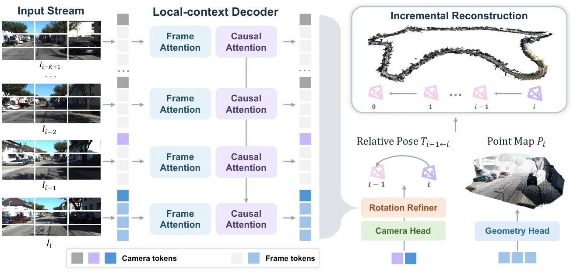
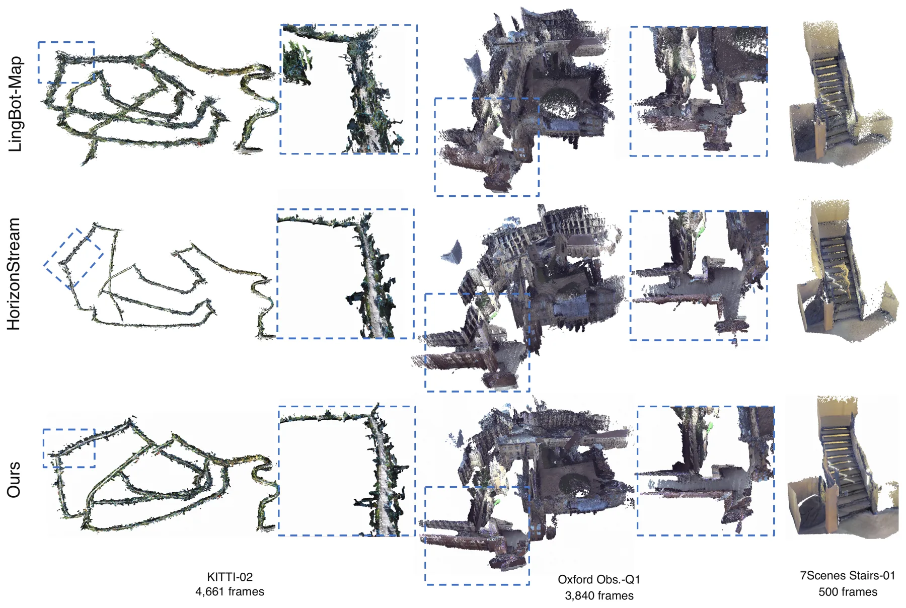
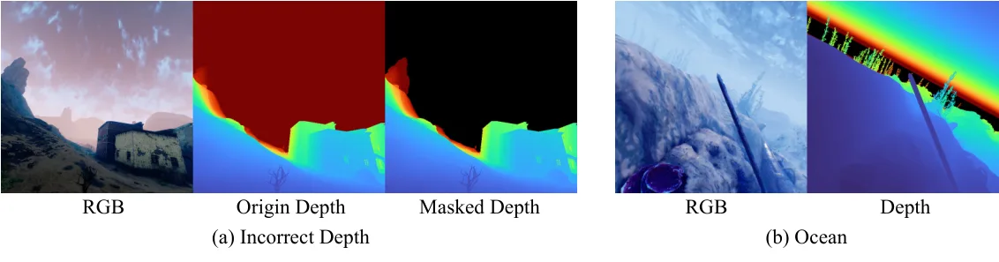
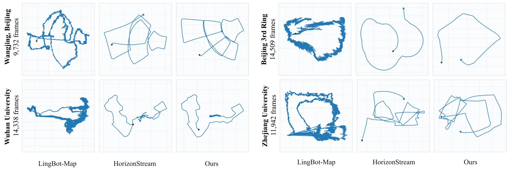

ABot-Recon：重新审视长时流式三维重建中的局部上下文Revisiting Local Context for Long-Horizon Streaming 3D Reconstruction
直接连接 Geometry Foundation Models、在线几何估计和长时漂移控制；官方 HTML 给出了 Oxford Spires、KITTI、VBR、7Scenes 等多数据集实验及运行效率数字。
一句话工作总结
以固定 12 帧局部上下文替代可增长的长程记忆，证明局部、等变的几何测量可以支撑超长流式重建。
完整单篇海报（待补全）
当前记录尚未达到完整海报质量门槛，暂不把摘要或评分理由冒充方法/实验结论。
待补字段：核心结论、动机与问题、方法总览、关键技术细节、实验设置、实验数字与比较。下一次任务需从论文全文或官方 HTML 提取证据后再发布。
摘要
ABot-Recon 只缓存前 11 帧的 KV 特征，在当前相机坐标系预测 point map、confidence map 和相邻帧相对位姿，再通过顺序组合恢复全局轨迹与几何。轻量 motion-visual rotation refiner 和 composition-aware pose loss 用于降低长序列旋转误差累积。
Streaming 3D reconstruction from extremely long videos requires estimating camera motion and scene geometry online under bounded memory and computation. Early streaming models achieve causal, bounded-cost inference using finite context buffers or compact recurrent states, yet their estimates often deteriorate as sequences grow. Recent methods improve long-horizon stability by coupling short-range context with persistent or multi-level long-range memory. We pursue a different route: we keep the learned temporal state strictly local and formulate predictions whose targets remain independent of sequence length. We present ABot-Recon, a simple streaming model that caches KV features from only the preceding 11 frames. It predicts a point map in the current camera coordinate system together with an adjacent-frame relative pose. These predictions remain equivariant under changes of reference frame, and global poses and geometry are recovered through sequential composition. To reduce accumulated drift, a lightweight temporal refiner improves relative rotations using recent visual and motion context, while a composition-aware pose loss supervises multi-step pose composition. Extensive evaluations on challenging long-sequence benchmarks demonstrate the superior long-horizon performance of our local-context approach. On Oxford Spires, ABot-Recon achieves an ATE of 4.35 m and an RPE-R of $0.12^\circ$, reducing both errors by approximately 40\% relative to the best prior results.
图表/页面预览

{kind=link}

{kind=link}

{kind=link}

{kind=link}
